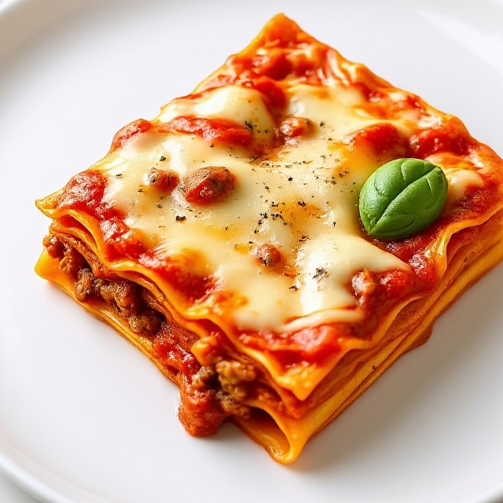

Home
Lasagna

Description
This is a recipe for a tasty lasagna with a rich bolognese!
Ingredients
For the bolognese sauce
- 2 teaspoons extra virgin olive oil
- 1 pound ground beef
- 1/2 medium onion, diced
- 1/2 large bell pepper, diced
- 2 cloves garlic, minced
- 1 can tomato sauce
- 3 ounces tomato paste
- 1 can crushed tomatoes
- 2 tablespoons fresh oregano, chopped
- 1/4 cup fresh parsley, chopped
- 1 tablespoon Italian seasoning
- 1 pinch garlic powder
- 1 tablespoon white wine vinegar
- 1-2 tablespoons sugar
- salt
For the lasagna
- 9 lasagna sheets
- 15 ounces ricotta cheese
- 1 1/2 pounds mozarella cheese, grated
- 1/4 pound freshly grated Parmesan cheese
Recipe
- Brown the ground beef in olive oil, drain off all but a tablespoon of fat.
- Cook the bell pepper, onions and garlic for 4 to 5 minutes.
- Add back the ground beef and cook for another 5 minutes.
- Add crushed tomatoes, tomato sauce and tomato paste to the pot.
- Add the parsley, oregano, italian seasonings and garlic.
- Sprinkle with white wine vinegar and stir in sugar.
- Salt to taste.
- Put pasta water on to boil in salted water.
- Boil pasta till al dente
- Bring the sauce to a simmer and then lower the heat to maintain a low simmer.
- Cook sauce for 30 minutes.
- Assemble the lasagna with sauce, then cheeses, then pasta sheets.
- Put the rest of the cheese on top.
- Bake for 45 minutes at 190C
- Leave to rest for 5 minutes
- Enjoy!